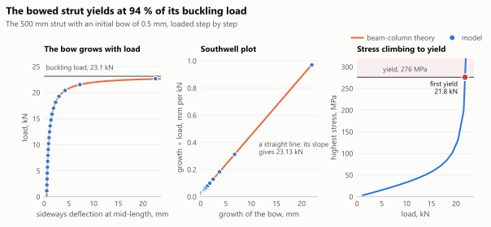
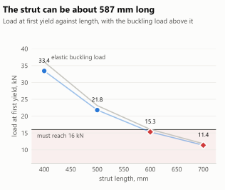

The Question
A 6061-T6 strut with a solid 25 × 16 mm section, pinned at both ends, carries 8 kN in compression. It has to reach twice that, 16 kN, before any fibre yields, allowing for an initial bow of L/1000, a typical straightness tolerance. How long can it be?
The Answer
About 587 mm. Before first yield, the bowed strut reaches 33.4 kN at 400 mm, 21.8 kN at 500 mm, 15.3 kN at 600 mm and 11.4 kN at 700 mm, so 400 and 500 mm pass and 600 and 700 mm fail.
The bow costs 4 to 7 %. First yield arrives at 93 to 96 % of the elastic buckling load, so a check on the buckling load alone would overstate what the strut can carry.
Drag the slider in the viewer at the top of the page to load the 500 mm strut step by step and watch the bow grow.
The Model
- Part
- A solid strut, 25 × 16 mm in section, at lengths of 400, 500, 600 and 700 mm.
- Material
- 6061-T6 aluminium: Young's modulus 68.9 GPa, Poisson's ratio 0.33, yield 276 MPa. Elastic up to first yield, where the analysis stops.
- Supports
- Pinned at both ends: a line support across the width at mid-thickness, so the ends are free to rotate.
- Imperfection
- An initial bow of L/1000 at mid-length, in the weak direction, shaped as a half sine wave.
- Load
- Compression along the axis, spread evenly over the end face.
- Mesh
- 3 mm hexahedral elements.
- Analysis
- Two analyses in CalculiX 2.22: a linear buckling (eigenvalue) analysis of the straight strut, and a geometrically nonlinear analysis of the bowed one, loaded in steps until the first fibre yields.
The case file: recorded assumptions, limits and inputs
This is the study's own record, written before the run and saved with it, in the shorthand of the case file.
Pinned-pinned 6061-T6 strut, 25 x 16 mm solid section, in compression: CalculiX linear buckling and a geometrically nonlinear analysis with an L/1000 initial bow to first yield, at L = 400 / 500 / 600 / 700 mm; checked against Euler-Engesser, the amplification law, the Southwell plot and Perry-Robertson.
Assumptions, and How Each Is Checked
- Pins on the centroidal axis at both ends (knife-edge line supports across the width at mid-thickness).
- Initial bow e0 = L/1000 in the weak direction, half-sine shaped (the first buckling mode): synthetic tolerance.
- Load axial and concentric at the ends, uniform over the end face (dead load).
- Linear elastic material up to first yield (6061-T6, E = 68.9 GPa, yield 276 MPa); the analysis stops just past first yield.
- Elastic buckling governs; checked: Euler stress at most half the yield stress (Johnson range otherwise).
- Moderate deflection at first yield; checked: below 5 % of the length.
Limits
- No residual stresses, end eccentricity or load misalignment beyond the bow.
- Capacity defined as first yield, not collapse (the plastic reserve beyond first yield is not used).
- References are model form (beam-column theory) except the Southwell plot, which uses the FE response itself.
- No physical test data.
Inputs
| Input | Value |
|---|---|
| length_mm | 500 |
| width_mm | 25 |
| thickness_mm | 16 |
| youngs_modulus_MPa | 68900 |
| poisson_ratio | 0.33 |
| yield_strength_MPa | 276 |
| element_size_mm | 3 |
| imperfection_over_length | 0.001 |
Why It Matters
A slender part in compression doesn't fail by crushing. At a certain load it bows sideways and gives way, usually well below the load its material could carry. The textbook buckling load, Euler's, is for a perfectly straight strut. No real strut is straight, and the small bow it starts with grows as the load rises, slowly at first and then very quickly near the buckling load. The bending that goes with that bow yields the material before the textbook load is reached.
So there are two questions: what's the buckling load, and how much of it can actually be used given a realistic imperfection? A linear buckling analysis answers only the first.
How It Works
The linear analysis gives the buckling load and the shape the strut buckles into. The second model starts with a bow of L/1000 in that same half-sine shape. The nonlinear analysis then loads the bowed strut in small steps, updating the geometry as it deflects, and records the load at which the stress first reaches yield.
The nonlinear run also gives a second, independent route to the buckling load. A Southwell plot takes the measured load and deflection alone and reads the critical load from the slope of a straight line. It's the method used on real test rigs, where the strut can't be loaded to failure.


How I Checked It
- Two routes to the buckling load. The linear eigenvalue analysis and the Southwell plot of the nonlinear run agree to 0.04 %. Both sit 0.06 to 0.1 % below Euler's formula with the shear correction.
- The shape and the growth of the bow. The first mode is an exact half sine, and the nonlinear response follows the amplification law e₀ / (1 − P/Pcr) to 0.2 % up to 80 % of the critical load. The Southwell fit recovers the bow that was put in to 0.3 %.
- First yield. It's within 1.3 % of the Perry-Robertson formula at every length. That formula is the basis of the column curves in steel design codes.
- The method is valid for these lengths. Every length is in the range where elastic buckling governs. A shorter strut would yield before it buckled, and the check would flag the elastic analysis as the wrong tool. Mesh refinement at 600 mm leaves 0.003 % uncertainty.
What I Caught Along the Way
- The mode-shape check failed at first. CalculiX prints the static solution before the first eigenvector, and my parser was reading it as mode 1. Two wrong explanations came first; the record says which one was the cause.
- The nonlinear solver's default convergence left the global force balance 3 × 10⁻⁶ out. Tighter solver settings brought it to 2 × 10⁻⁷ without touching the tolerance.
Limits, and What I'd Do Next
- Capacity is defined as first yield, so the plastic reserve beyond it isn't used. That's the cautious choice.
- No residual stresses, and no load eccentricity or misalignment beyond the bow. Each of those would lower the capacity further.
- The references are beam-column theory, except the Southwell plot, which uses the model's own response.
- The L/1000 bow is a typical tolerance, not a measured one, and there's no test data.